本教程采用的是一个售楼部，具体讲解的是售楼部从白天到夜晚灯光效果的一个做法过程
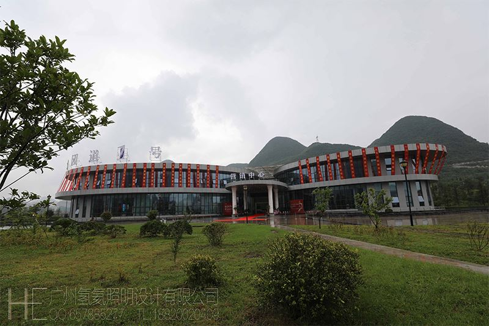
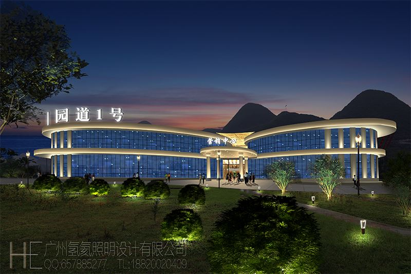
一丶调整透视
我们先把需要处理的图放进PS里面（分为白天的效果图和现场拍摄的照片），首先讲的就是整体的透视，模型效果图是已经处理好透视的，如果是现场拍摄的照片是需要处理透视的。我们采用的是一张现场拍摄的照片，所以第一步就是复制一层底图（为了防止处理不好还可以返回原图）然后快捷键ctr+r显示标尺从标尺处直接拉出参考线。
复制图层
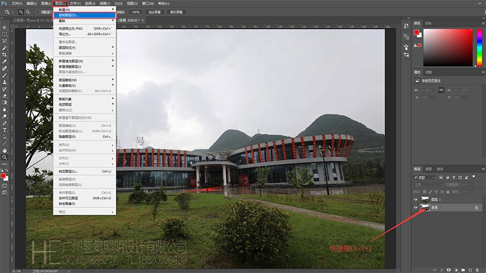
显示标尺
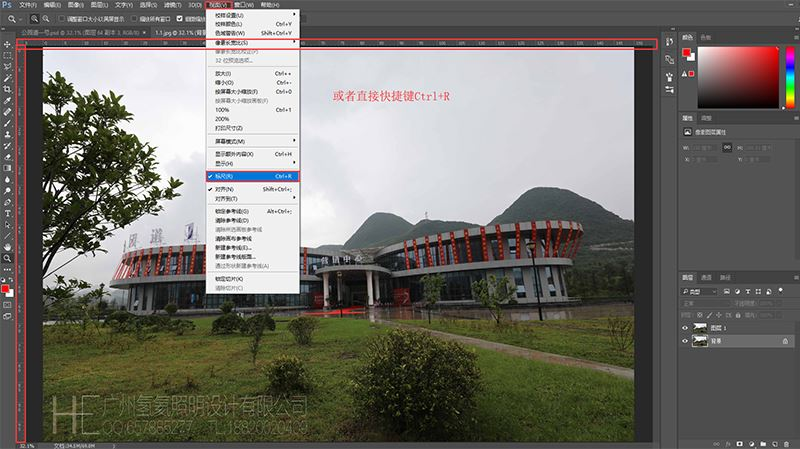
拉参考线
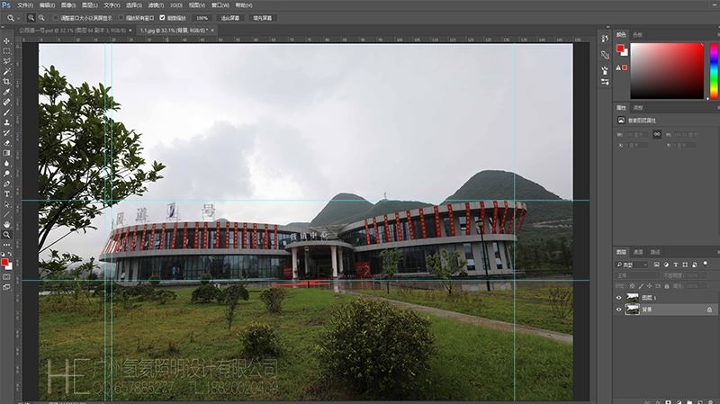
二丶更换背景天空
调整好透视问题以后就开始抠底图，换掉原有的天空（找一张天空的素材放进去，尽量找一些带一小点云朵的，这样看着比较真实）。扣图的时候尽量扣仔细一点，这样后期处理起来会比较容易，且美观上也会很舒适协调。我们采用的工具是钢笔工具。
处理好后就开始把整体调成夜晚的样子。
用钢笔工具扣出天空
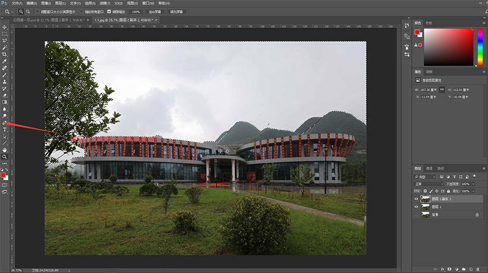
放入天空背景并压暗底图
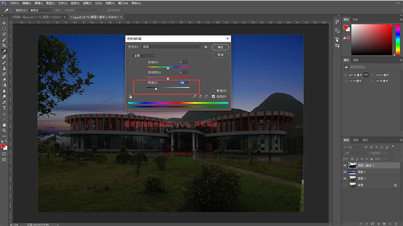
三丶修图及制作前景
调完夜景以后我们就要开始思考我们要怎么去设计灯光或者根据业主给的要求我们去实现效果。我们在把夜晚的图层关掉，然后在白天的图层里面开始扣图，因为夜晚我们是压暗的，会看不太清楚一些细节，所以我们会在白天的图层上面扣图，扣图是个漫长的过程，要求很仔细。具体过程我就不一一展示了，要求自己去体会。还有一个就是修图，因为选图的原因我就简单的介绍一下：修图就是把一些有明暗区别的面给他修成一个亮度的，工具我们可以采用仿制图章丶填充颜色等。
扣完图以后我们就要思考该从哪里开始了，我的个人习惯是先做周围的环境光，先把整个草坪扣下来，然后在刷上一点泛光，我们这里的泛光就是楼体内透出来或者墙体本身做的光亦或者是草坪上做了一些草坪灯丶绿植灯丶庭院灯等所散发出来的光。然后就是找素材贴前景植物了，尽量找一些跟图上植物类似的植物贴上去然后在刷出它的光感来，然后在做一些草坪灯跟庭院灯来烘托氛围。
扣出前景草坪
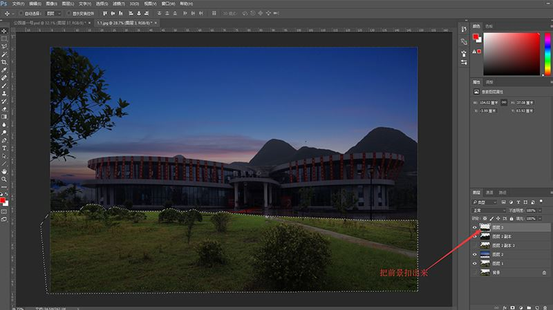
放入前景植物素材
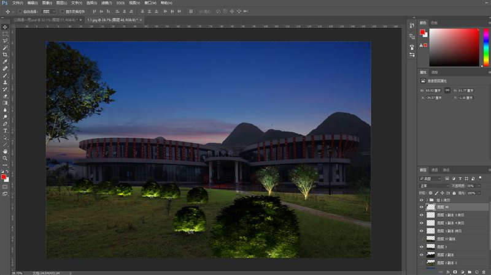
点缀前景景观灯
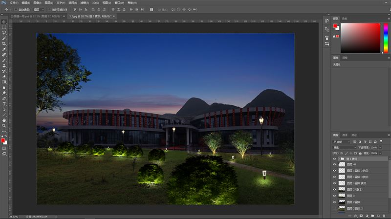
四丶广场亮化
做完植物环境以后我们就要开始考虑前面的广场，我们的要求是保持画面的干净，我们现在这张图前面广场比较暗，看不清结构。所有我采用的是找了一些素材贴上去，贴好后画面就显得比较干净。因为是广场，所以我们需要给它加上一些人物在上面，这样看着会比较有生机。现在人也有了，我们就要想象，当我们走在灯光下面的时候是不是会有倒影，所以我们在给它把倒影加上去，这样看上去就会比较真实了。现在这些人物景观都有了就要考虑入口处了，入口是个重点，我们不管是去到一个商场或者小区门口，他的入口都是会比周围亮的，所有我们在入口处给他加个光斑，这样入口就比其他地方亮了，视觉重点一下就被吸引过去了。
更换广场地砖
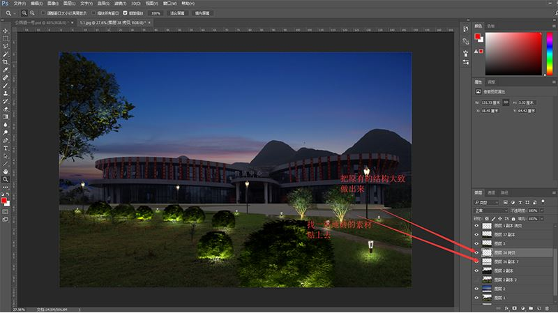
添加人物素材
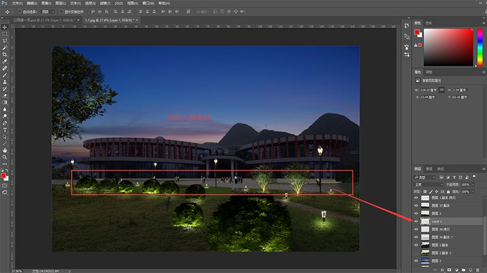
添加人物倒影
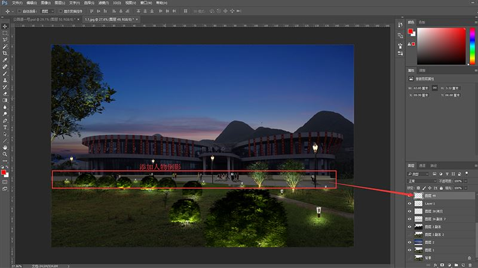
增强入口出光斑
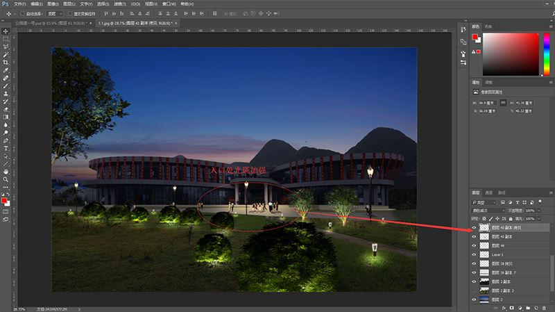
五丶制作立面灯光
我们现在把周围环境跟广场及入口处都处理好了就开始考虑楼体的亮化了。我们通常会根据楼体自身的形态去分析该怎么做灯光。我们这张图顶部是个宽面，侧面有少许实墙，其他的都是玻璃幕墙。所以，我们考虑的是顶部采用洗墙灯去洗他的一个宽面，侧面采用投光或者地埋灯。我们采用的是3000K的一个暖光。
立面抠图
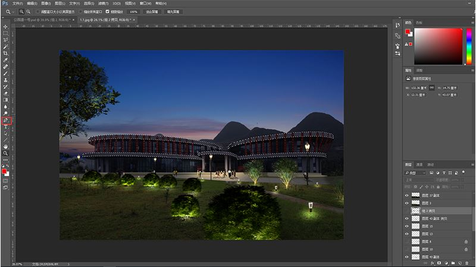
侧墙扣图
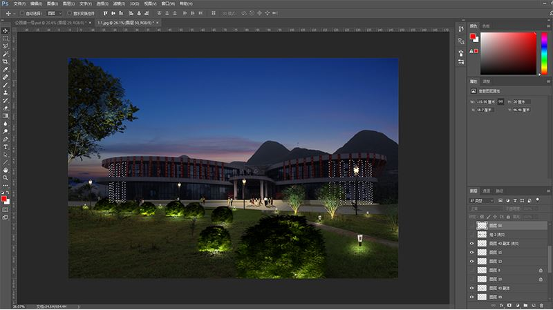
锁定填充
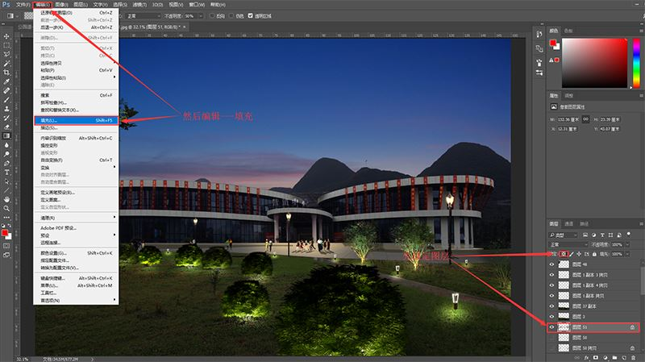
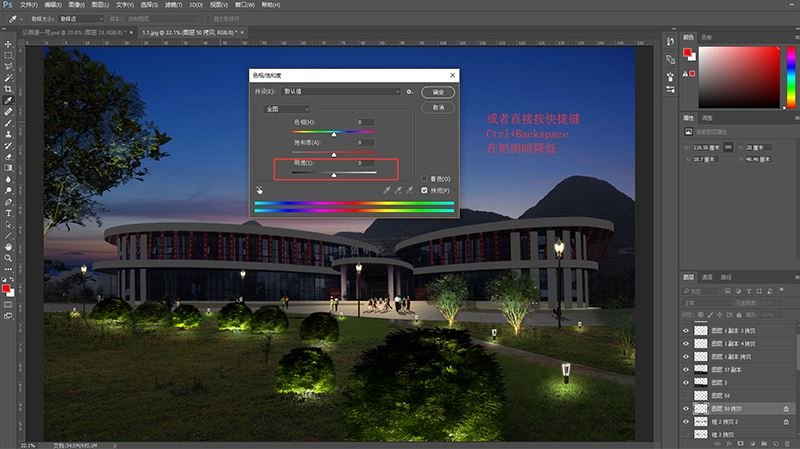
刷出光斑
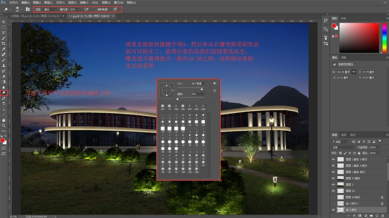
六丶玻璃幕内透及屋檐光
做好这些以后画面看上去中间玻璃幕墙比较暗，所以我们给玻璃幕墙做上内透，让整个画面看上去协调，内透不宜过强，不然会抢了楼体的灯光。做完内透光以后洗墙下面还有一个屋檐，因为是内透的所以屋檐下面也是会有亮光的。
屋檐底部受光
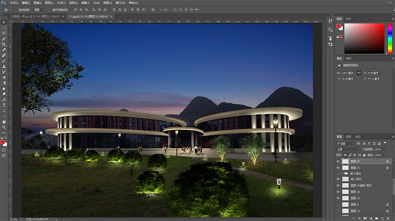
放入内透素材
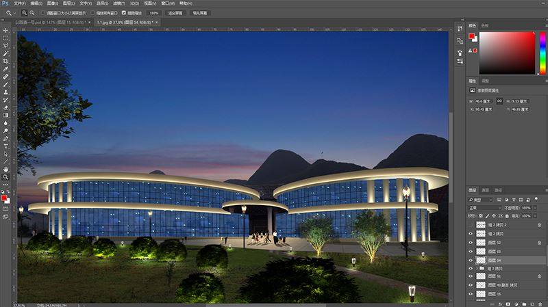
七丶入口处及顶棚
做完这些以后我们又回到了大门口了。先分析一下图，入口的最上部有一个类似雨棚的玻璃遮罩，大门入口处有几个柱子。首先我们采用投光或者泛光方式把顶部玻璃雨棚给打亮，入口处的柱子采用地买丶投光或者是抱柱灯把柱子打亮。
大门及雨蓬
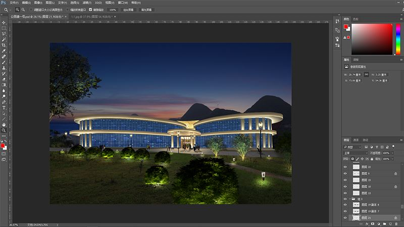
八丶顶部发光字
最后一部就是把他的招牌给他加上了，招牌我们就简单的把他做成立体发光的就可以了。具体的做法：
1.快捷键T打字；2.格栅化图层（打好字的那个图层）；3.复制一层；4.把原图层压暗（ctrl+U直接调明暗）；5.把压暗的图层往右挪动一点（具体多少要自己把握）；6.把没有压暗的图层在复制一层出来加上高斯模糊（菜单栏-滤镜-模糊-高斯模糊（这里会出来一个值，这个值要自己根据图的大小去调，一般在1-10之间就可以了，这个可以自己去尝试）；7.把给过高斯模糊的那个图层放在原图层的下面。
输入文字及调整字体
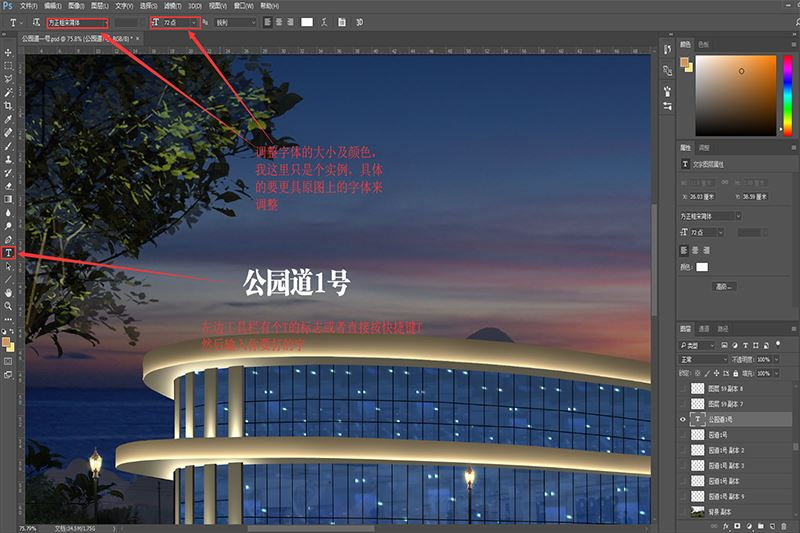
格栅化图层
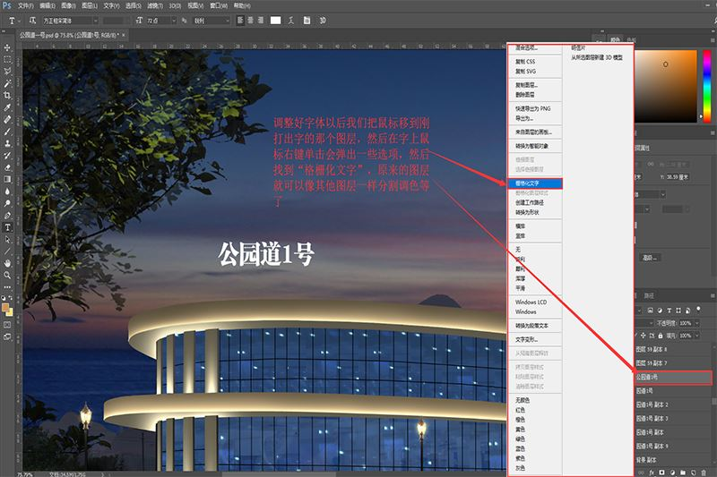
字体对位
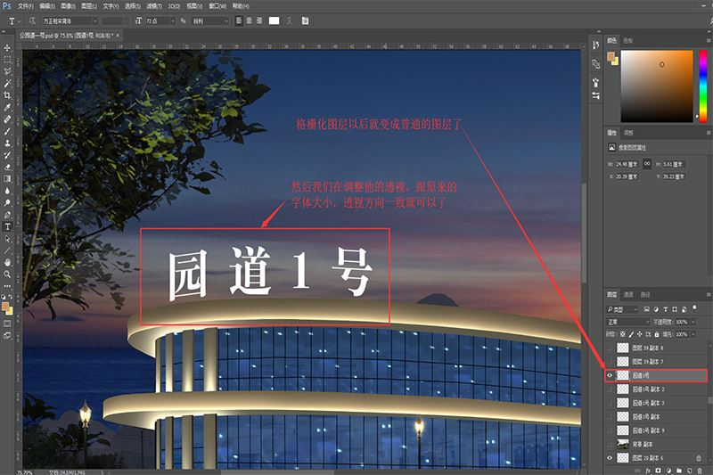
立体感制作
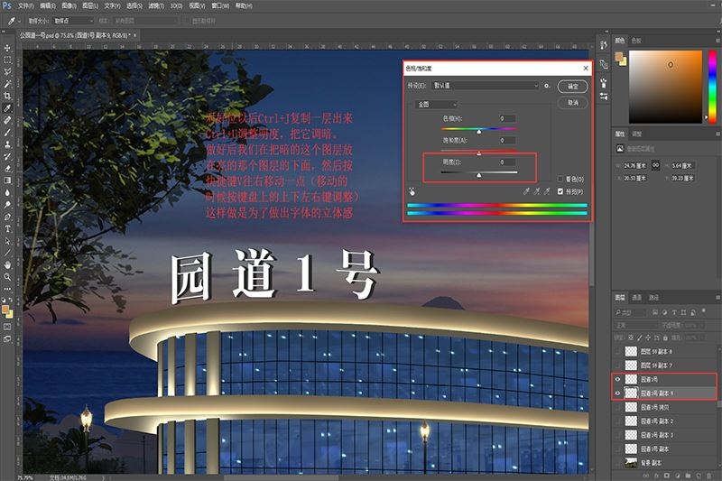
高斯模糊制作
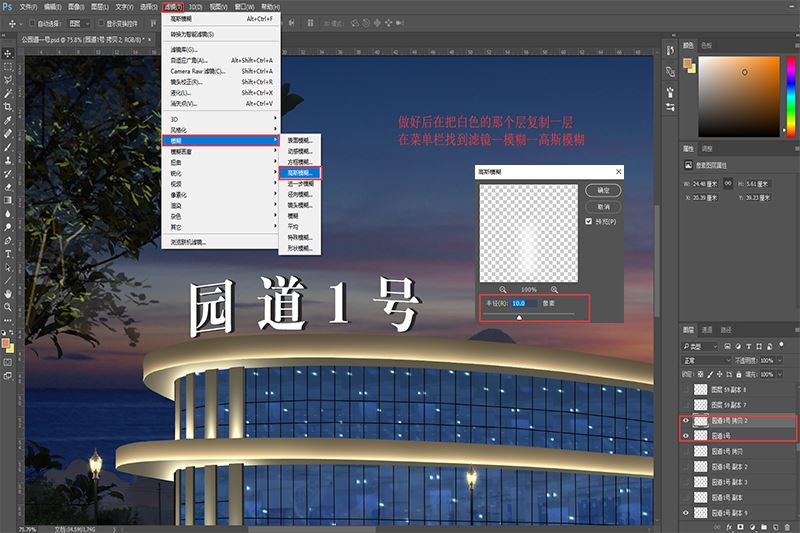
完成发光字制作
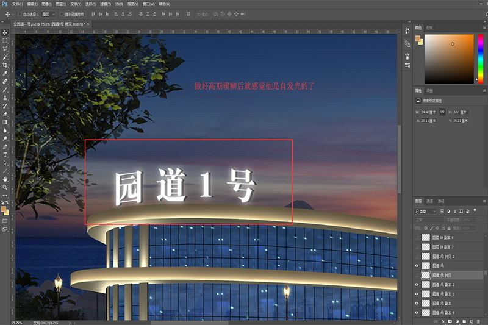
九丶调整整体明暗，完成效果图制作
做好这些这张图就差不多做完了，我们只需要在去调整一下整体的明暗丶对比度就可以了。
这就是一张完整的效果图了，希望能给你带来一小点帮助。同时有不足之处希望各位大神多多指点，相互学习。谢谢！！！
KEY WORD关键词：建筑照明设计 景观灯光设计 楼体亮化设计 古建筑照明 灯光效果图制作